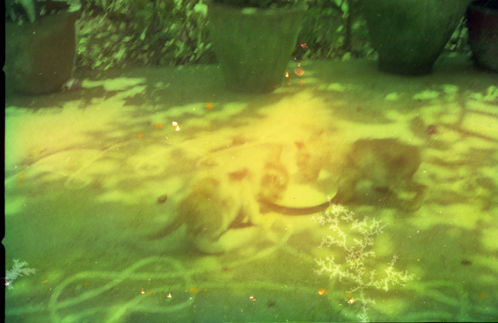

Wear and tear — evidence of something well-loved
Can physical damage be provenance data telling us the story of how this object was used and how it was kept? These are damaged negatives that were stored in my grandmother's house in Chennai for many decades, where humidity becomes a huge factor in their degradation. The discoloration, fungal damage on the images are a kind of material trace of use and context of the physical negatives.